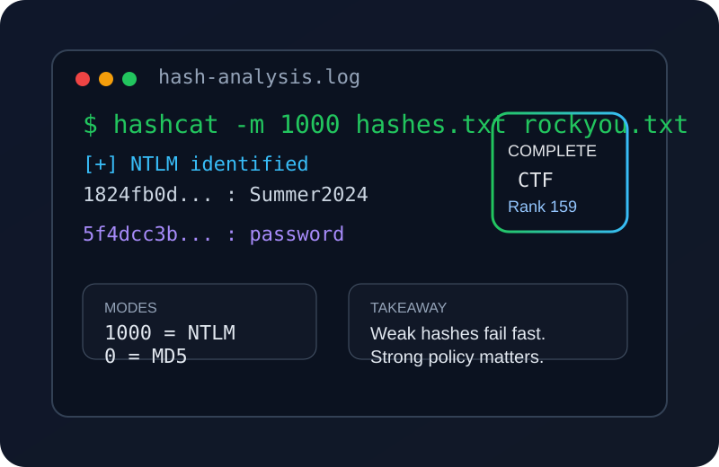

LIVE
Cyber Skyline CTF
Active competition work including NTLM and MD5 hash cracking challenges, password analysis, and forensics-style problem solving under competitive conditions.
NTLMMD5Hash CrackingPassword Analysis
~/somersworth-nh · MS Cybersecurity · 4.0 GPA
I build and defend systems where security, stability, and clear documentation meet. Currently finishing an MS in Cybersecurity at SNHU while contributing to AI training across four active projects and competing in CTF competitions.
Currently active
Active competition work including NTLM and MD5 hash cracking challenges, password analysis, and forensics-style problem solving under competitive conditions.
Graduate coursework with a 4.0 GPA. Current focus: network traffic analysis, security architecture, and applied cryptography. Expected completion early next year.
Contributing to four concurrent AI training projects (Hedgehog, Spectra, Helix, Lexicon) — reviewing outputs, documenting findings, and supporting model quality through structured feedback.
About
My background blends hands-on troubleshooting, home lab experimentation, network design, customer-facing field work, security-focused coursework, and team leadership. I like turning technical detail into fixes that are practical, documented, and easier for other people to support.
I think my strongest value is connecting infrastructure decisions to everyday user impact — reducing repeat issues, making escalation clearer, and improving stability without losing sight of security. My current graduate work adds depth in defense in depth, risk reduction, and architectural hardening.
Target roles
The strongest evidence on this site is the mix of troubleshooting-minded architecture, access control planning, incident analysis, secure network segmentation, and operations documentation. That combination translates well to support teams that value uptime, clear escalation, security-aware user support, and employees who can bridge technical work with leadership communication.
Tech stack
Certifications
All badges verified on Credly for fast recruiter access.
View badges →Featured work

Documented approach to cracking NTLM and MD5 password hashes in a Cyber Skyline CTF competition — covering hash identification, wordlist strategy, rule-based mutations, and defensive takeaways.
Cyber Skyline CTF · April 2026 · Active competition
Read write-up
Designed a segmented enterprise campus network to improve security, reduce outage blast radius, and simplify troubleshooting across users, devices, and services.
Open project
Analyzed a multi-site enterprise network to identify reliability and supportability issues. Produced an SD-WAN-focused architecture that improves resilience and simplifies troubleshooting.
Open project
Translated governance and security requirements into practical operational controls — access management, logging, monitoring, and escalation processes that strengthen accountability.
Evaluated at graduate level against CISO decision-making criteria — IT-552, SNHU
Open project
Analyzed the Trinity Health breach to assess how monitoring gaps, access handling failures, and delayed escalation increased risk in a regulated healthcare environment.
Open project
End-to-end office network infrastructure proposal covering topology, ISP selection, core hardware, BitLocker encryption, VPN access, and future growth requirements.
Open project
Executive-level security awareness presentation that translated technical risk findings into clear business terms for leadership review and rollout planning.
Scored 305/305 — Richmond Adebiaye, PhD, CISSP, CISM · IT-552, SNHU
Open projectEducation
M.S. in Cybersecurity — In Progress
B.S. in Information Technologies · Cybersecurity Concentration
Relevant coursework
Course spotlight
IT-552: Legal and Human Factors in Cybersecurity — A (4.0)
Evaluated by Richmond Adebiaye, PhD, CISSP, CISM. Covered risk-based decision making, security awareness program design, organizational threat factors, and stakeholder communication strategy.
Experience
Contact
The easiest way to reach me is through email or LinkedIn. My portfolio and LinkedIn are aligned so hiring teams can quickly see my projects, credentials, and current graduate study focus.
Send a message